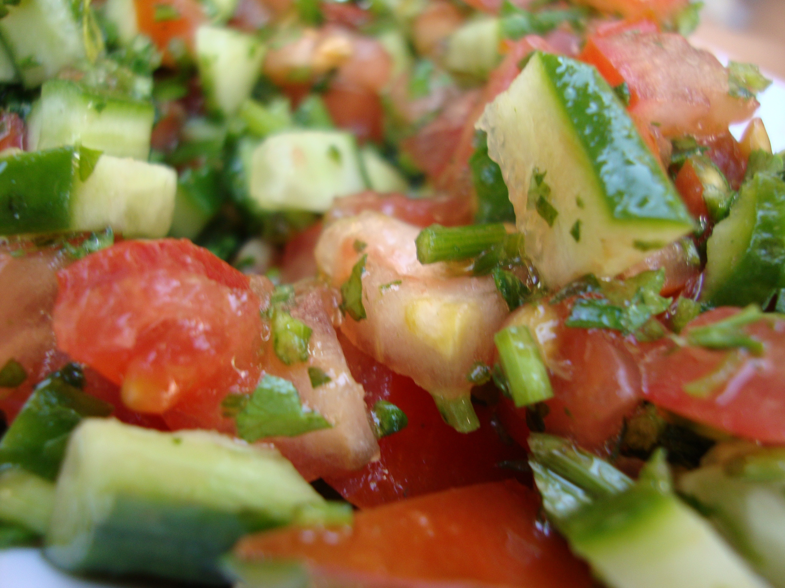

Shepherd's Salad

A Turkish Salad with Cucumber, Tomatoes, Onions, and Cilantro
Ingredients
- 1 long english cucumber
- 4 Campari Tomatoes
- 1/4 of a red onion
- 1 sprig of cilantro
- 1/4 of a lemon
- olive oil
- salt
Steps
- Dice the cucumber and tomato
- Mince the onion and cilantro
- Add cucumber, tomato, onion and cilantro into a large bowl
- Squeeze the juice of the lemon over the vegetables
- Add salt and olive oil to taste
Home